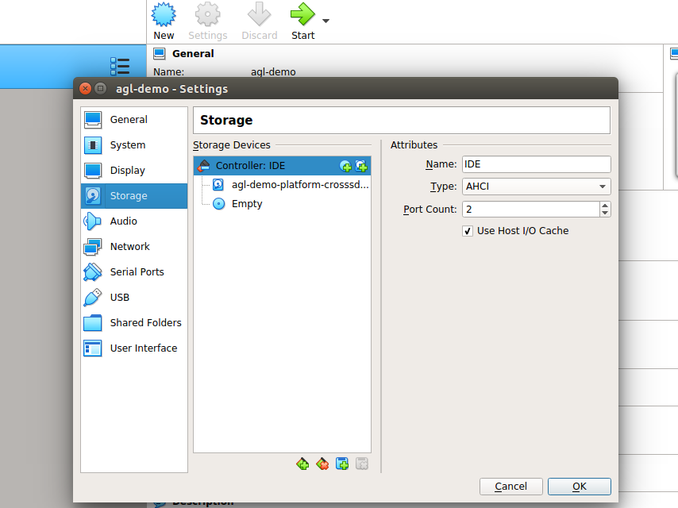
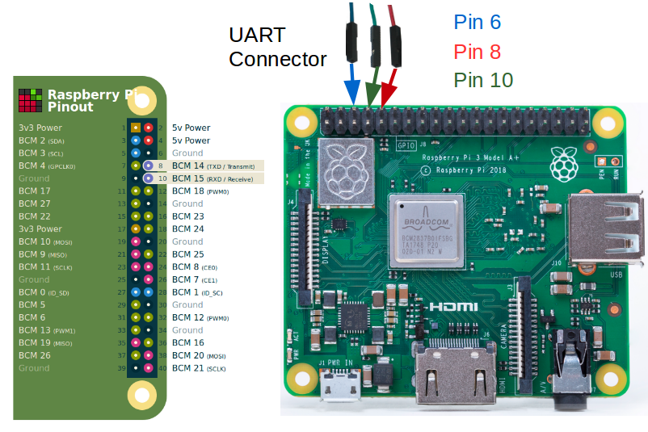

AGL provides a number of pre-built ready-made images of various versions.
x86 (Emulation and Hardware)
1. QEMU (Emulation)
-
Download the compressed prebuilt image.
-
Download the compressed kernel image.
-
Install QEMU :
$ apt-get install qemu -
Install vinagre :
$ sudo apt install vinagre -
Create boot directory and copy compressed images (prebuilt & kernel) into them :
$ mkdir ~/agl-demo/ $ cp ~/Downloads/agl-demo-platform-crosssdk-qemux86-64.ext4.xz ~/agl-demo/ $ cp ~/Downloads/bzImage ~/agl-demo/ $ cd ~/agl-demo $ sync -
Extract prebuilt compressed image :
$ xz -v -d agl-demo-platform-crosssdk-qemux86-64.ext4.xz -
Launch QEMU with vinagre (for scaling), remove
- snapshot \if you want to save changes to the image files :
$ ( sleep 5 && vinagre --vnc-scale localhost ) > /tmp/vinagre.log 2>&1 &
$ qemu-system-x86_64 -device virtio-net-pci,netdev=net0,mac=52:54:00:12:35:02 -netdev user,id=net0,hostfwd=tcp::2222-:22 \
-drive file=agl-demo-platform-crosssdk-qemux86-64.ext4,if=virtio,format=raw -show-cursor -usb -usbdevice tablet -device virtio-rng-pci \
-snapshot -vga virtio \
-vnc :0 -soundhw hda -machine q35 -cpu kvm64 -cpu qemu64,+ssse3,+sse4.1,+sse4.2,+popcnt -enable-kvm \
-m 2048 -serial mon:vc -serial mon:stdio -serial null -kernel bzImage \
-append 'root=/dev/vda rw console=tty0 mem=2048M ip=dhcp oprofile.timer=1 console=ttyS0,115200n8 verbose fstab=no'
-
Login into AGL :
Automotive Grade Linux 11.0.0+snapshot qemux86-64 ttyS1 qemux86-64 login: root -
Shutdown QEMU :
$ poweroff, otherwise QEMU will run in the background. - To use vnc-viewer instead of vinagre :
$ ( sleep 5 && vncviewer ) & qemu-system-x86_64 -device virtio-net-pci,netdev=net0,mac=52:54:00:12:35:02 -netdev user,id=net0,hostfwd=tcp::2222-:22 \ -drive file=agl-demo-platform-crosssdk-qemux86-64.ext4,if=virtio,format=raw -show-cursor -usb -usbdevice tablet -device virtio-rng-pci \ -snapshot -vga virtio \ -vnc :0 -soundhw hda -machine q35 -cpu kvm64 -cpu qemu64,+ssse3,+sse4.1,+sse4.2,+popcnt -enable-kvm \ -m 2048 -serial mon:vc -serial mon:stdio -serial null -kernel bzImage \ -append 'root=/dev/vda rw console=tty0 mem=2048M ip=dhcp oprofile.timer=1 console=ttyS0,115200n8 verbose fstab=no'
2. Virtual Box (Emulation)
NOTE : Please note https://www.virtualbox.org/ticket/19873 as this affects the VMs resolution. The AGL demo images do require 1920x1080. The instructions below have been adapted.
-
Download the compressed vbox disk image.
-
Install and set up Virtual Box.
-
Extract the vmdk file :
$ xz -v -d agl-demo-platform-crosssdk-qemux86-64.wic.vmdk.xz -
Configure virtual box for AGL :
- Click on
NeworAdd. - Enter Name as
agl-demo. - Type as
Linux. - Version as
Other Linux (64-bit), click onNext.
- Select Memory size. Recommended is
2048 MB, click onNext.
- Click on
Use an existing virtual hard disk file, and select the extractedagl-demo-platform-crosssdk-qemux86-64.wic.vmdkfile, click onCreate. - Go to
Settings, and intoSystem. SelectChipset : IHC9. Check onEnable EFI (special OSes only)and click onOK.
- Go to
Storage, and change the attribute toType : AHCIand click onOK.  - Next go to
Displayand change the attribute to 'VMSVGA' for the graphics driver. Change the graphics memory to be at least 64MB. - Important:: Open a new terminal window and execute this command:
VBoxManage setextradata agl-demo VBoxInternal2/EfiGraphicsResolution 1920x1080 - Return to the UI and click on
Start. - For troubleshooting, you can refer here.
- Click on
3. x86 physical system
NOTE : UEFI enabled system is required.
-
Download the compressed prebuilt image.
-
Extract the image into USB drive :
$ lsblk $ sudo umount <usb_device_name> $ xzcat agl-demo-platform-crosssdk-qemux86-64.wic.xz | sudo dd of=<usb_device_name> bs=4M $ sync -
Boot from USB drive on the x86 system.
ARM 32 bit (Emulation and Hardware)
1. QEMU (Emulation)
-
Download the compressed prebuilt image.
-
Download the compressed kernel image.
-
Install QEMU :
$ apt-get install qemu -
Install vinagre :
$ sudo apt install vinagre -
Create boot directory and copy compressed images (prebuilt & kernel) into them :
$ mkdir ~/agl-demo/ $ cp ~/Downloads/agl-demo-platform-crosssdk-qemuarm.ext4.xz ~/agl-demo/ $ cp ~/Downloads/zImage ~/agl-demo/ $ cd ~/agl-demo $ sync -
Extract prebuilt compressed image :
$ xz -v -d agl-demo-platform-crosssdk-qemuarm.ext4.xz -
Launch QEMU with vinagre (for scaling), remove
- snapshotif you want to save changes to the image files :
$ ( sleep 5 && vinagre --vnc-scale localhost ) > /tmp/vinagre.log 2>&1 &
qemu-system-arm -cpu cortex-a15 -machine virt-2.11 -nographic \
-net nic,model=virtio,macaddr=52:54:00:12:34:58 \
-net user -m 2048 -monitor none -soundhw hda -device usb-ehci \
-device virtio-rng-pci -device VGA,vgamem_mb=64,edid=on -vnc :0 \
-device qemu-xhci -device usb-tablet -device usb-kbd \
-kernel zImage -append "console=ttyAMA0,115200 root=/dev/vda verbose systemd.log_color=false" \
-drive format=raw,file=agl-demo-platform-crosssdk-qemuarm.ext4 \
-snapshot
-
Login into AGL :
Automotive Grade Linux 11.0.0+snapshot qemux86-64 ttyS1 qemux86-64 login: root -
Shutdown QEMU :
$ poweroff, otherwise QEMU will run in the background. - To use vnc-viewer instead of vinagre :
$ ( sleep 5 && vncviewer ) & qemu-system-arm -cpu cortex-a15 -machine virt-2.11 -nographic \ -net nic,model=virtio,macaddr=52:54:00:12:34:58 \ -net user -m 2048 -monitor none -soundhw hda -device usb-ehci \ -device virtio-rng-pci -device VGA,vgamem_mb=64,edid=on -vnc :0 \ -device qemu-xhci -device usb-tablet -device usb-kbd \ -kernel zImage -append "console=ttyAMA0,115200 root=/dev/vda verbose systemd.log_color=false" \ -drive format=raw,file=agl-demo-platform-crosssdk-qemuarm.ext4 \ -snapshot
2. BeagleBone Enhanced (BBE)
-
Download the compressed prebuilt image.
-
Extract the image into the SD card of BeagleBone Enhanced :
$ lsblk $ sudo umount <sdcard_device_name> $ xzcat agl-demo-platform-crosssdk-bbe.wic.xz | sudo dd of=<sdcard_device_name> bs=4M $ syncIMPORTANT NOTE: Before re-writing any device on your Build Host, you need to be sure you are actually writing to the removable MicroSD card and not some other device. Each computer is different and removable devices can change from time to time. Consequently, you should repeat the previous operation with the MicroSD card to confirm the device name every time you write to the card.
To summarize this example so far, we have the following: The first SATA drive is
/dev/sdaand/dev/sdccorresponds to the MicroSD card, and is also marked as a removable device.You can see this in the output of thelsblkcommand where "1" appears in the "RM" column for that device.
AARCH64 - ARM 64bit
1. QEMU (Emulation)
-
Download the compressed prebuilt image.
-
Download the compressed kernel image.
-
Install QEMU :
$ apt-get install qemu -
Install vinagre :
$ sudo apt install vinagre -
Create boot directory and copy compressed images (prebuilt & kernel) into them :
$ mkdir ~/agl-demo/ $ cp ~/Downloads/agl-demo-platform-crosssdk-qemuarm64.ext4.xz ~/agl-demo/ $ cp ~/Downloads/zImage ~/agl-demo/ $ cd ~/agl-demo $ sync -
Extract prebuilt compressed image :
$ xz -v -d agl-demo-platform-crosssdk-qemuarm64.ext4.xz -
Launch QEMU with vinagre (for scaling), remove
- snapshot \if you want to save changes to the image files :
$ ( sleep 5 && vinagre --vnc-scale localhost ) > /tmp/vinagre.log 2>&1 &
qemu-system-aarch64 -cpu cortex-a57 -machine virt -nographic \
-net nic,model=virtio,macaddr=52:54:00:12:34:58 \
-net user -m 2048 -monitor none -smp 2 -soundhw hda -device usb-ehci \
-device virtio-rng-pci -device VGA,vgamem_mb=64,edid=on \
-device qemu-xhci -device usb-tablet -device usb-kbd -vnc :0 \
-kernel Image -append "console=ttyAMA0,115200 root=/dev/vda verbose systemd.log_color=false " \
-drive format=raw,file=agl-demo-platform-crosssdk-qemuarm64.ext4 \
-snapshot
-
Login into AGL :
Automotive Grade Linux 11.0.0+snapshot qemux86-64 ttyS1 qemux86-64 login: root -
Shutdown QEMU :
$ poweroff, otherwise QEMU will run in the background. - To use vnc-viewer instead of vinagre :
$ ( sleep 5 && vncviewer ) & qemu-system-aarch64 -cpu cortex-a57 -machine virt -nographic \ -net nic,model=virtio,macaddr=52:54:00:12:34:58 \ -net user -m 2048 -monitor none -smp 2 -soundhw hda -device usb-ehci \ -device virtio-rng-pci -device VGA,vgamem_mb=64,edid=on \ -device qemu-xhci -device usb-tablet -device usb-kbd -vnc :0 \ -kernel Image -append "console=ttyAMA0,115200 root=/dev/vda verbose systemd.log_color=false " \ -drive format=raw,file=agl-demo-platform-crosssdk-qemuarm64.ext4 \ -snapshot
2. Raspberry Pi 4
-
Download the compressed prebuilt image.
-
Extract the image into the SD card of Raspberry Pi 4 :
$ lsblk $ sudo umount <sdcard_device_name> $ xzcat agl-demo-platform-crosssdk-raspberrypi4-64.wic.xz | sudo dd of=<sdcard_device_name> bs=4M $ syncIMPORTANT NOTE: Before re-writing any device on your Build Host, you need to be sure you are actually writing to the removable MicroSD card and not some other device. Each computer is different and removable devices can change from time to time. Consequently, you should repeat the previous operation with the MicroSD card to confirm the device name every time you write to the card.
To summarize this example so far, we have the following: The first SATA drive is
/dev/sdaand/dev/sdccorresponds to the MicroSD card, and is also marked as a removable device.You can see this in the output of thelsblkcommand where "1" appears in the "RM" column for that device. -
SSH into Raspberry Pi :
- Connect Raspberry Pi to network :
Homescreen > Settings, IP address mentioned here. ssh root@<Raspberry-Pi-ip-address>
- Connect Raspberry Pi to network :
-
Serial Debugging :
When things go wrong, you can take steps to debug your Raspberry Pi. For debugging, you need a 3.3 Volt USB Serial cable to fascilitate communication between your Raspberry Pi board and your build host.
You can reference the following diagram for information on the following steps:

-
Connect the TTL cable to the Universal Asynchronous Receiver-Transmitter (UART) connection on your Raspberry Pi board. Do not connect the USB side of the cable to your build host at this time.
CAUTION: No warranty is provided using the following procedure. Pay particular attention to the collors of your cable as they could vary depending on the vendor.
-
Connect the cable's BLUE wire to pin 6 (i.e. Ground) of the UART.
-
Connect the able's GREEN RX line to pin 8 (i.e. the TXD line) of the UART.
-
Connect the cable's RED TX line to pin 10 (i.e. the RXD line) of the UART.
-
Plug the USB connector of the cable into your build host's USB port.
-
Use your favorite tool for serial communication between your build host and your Raspberry Pi. For example, if your build host is a native Linux machine (e.g. Ubuntu) you could use
screenas follows from a terminal on the build host:
$ sudo screen /dev/ttyUSB0 115200 -
3. R-Car H3SK (H3ULCB board)
NOTE : The prebuilt image does support non-accelerated graphics mode (software rendering). For accelerated graphics support, a local build with the neccesary graphics driver is required.
-
Download the compressed prebuilt image.
-
Extract the image into the boot device :
$ lsblk $ sudo umount <boot_device_name> $ xzcat agl-demo-platform-crosssdk-h3ulcb.wic.xz | sudo dd of=<boot_device_name> bs=4M $ sync -
Serial into the board for debugging. For example, if your build host is a native Linux machine (e.g. Ubuntu) you could use
screenas follows from a terminal on the build host:$ sudo screen /dev/ttyUSB0 115200